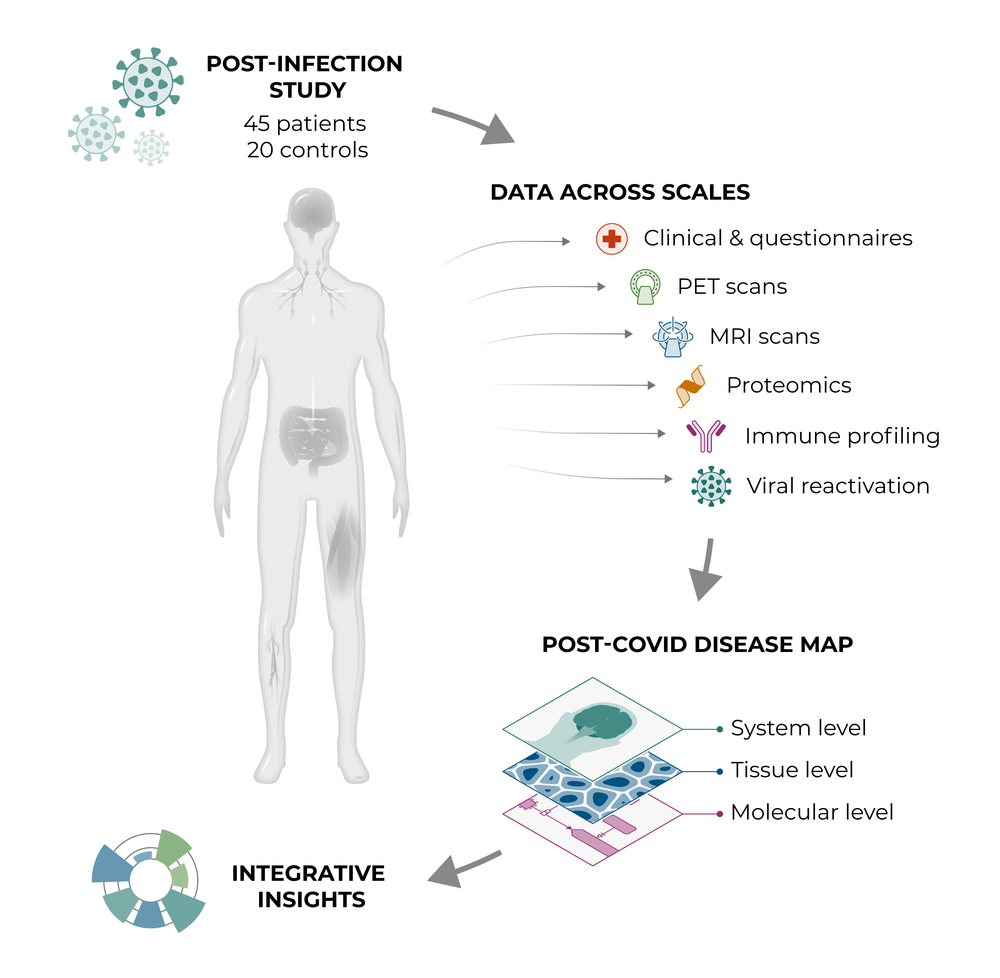
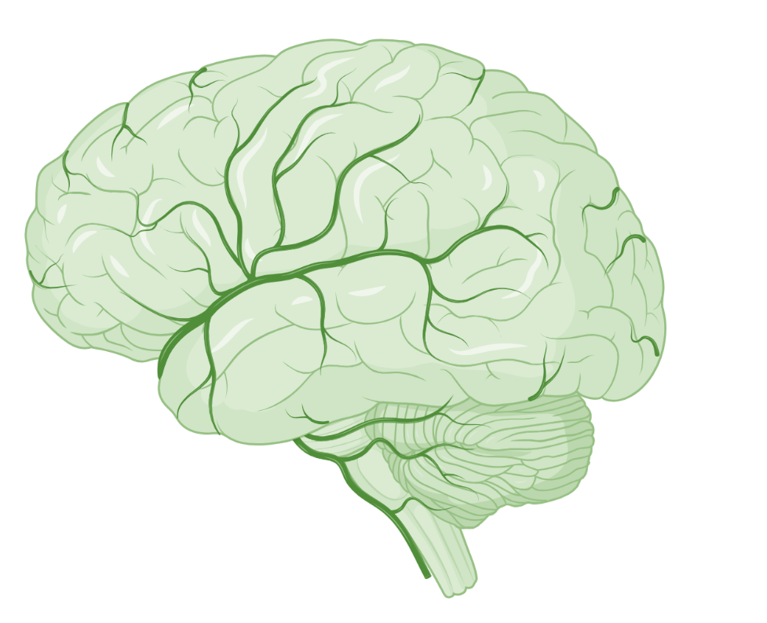
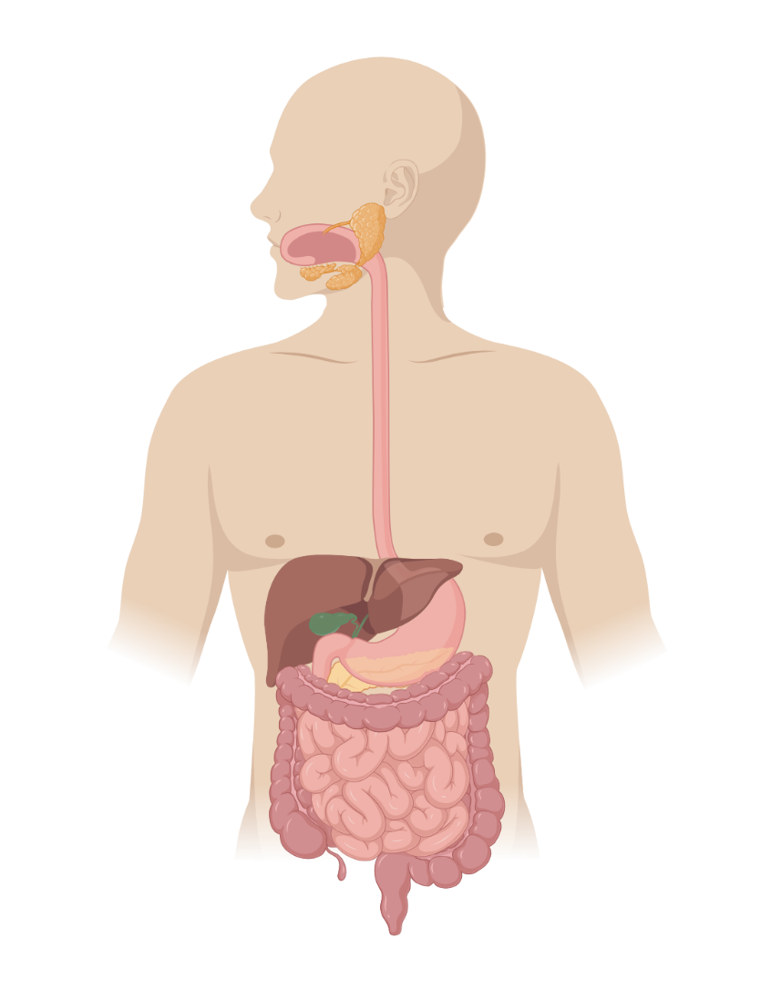
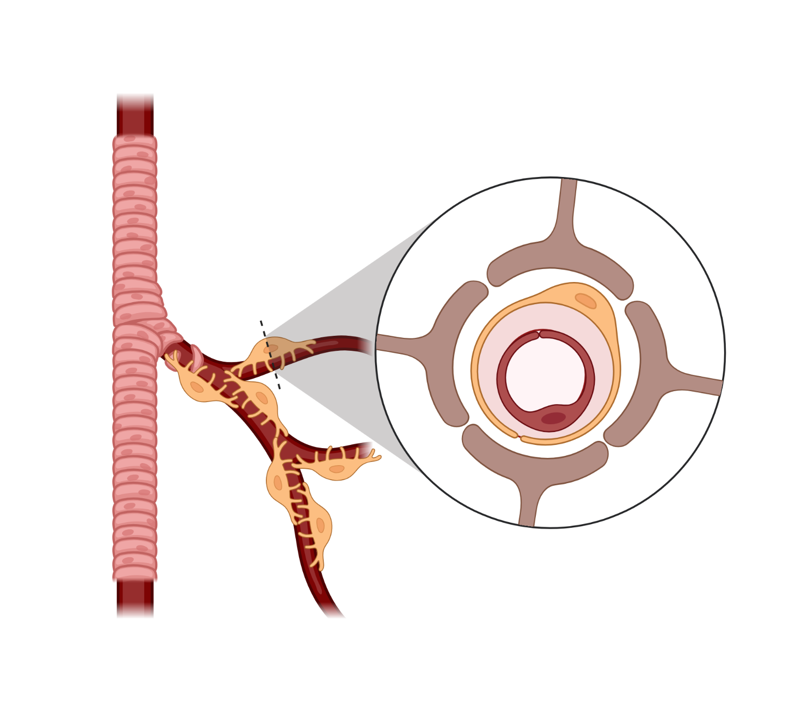
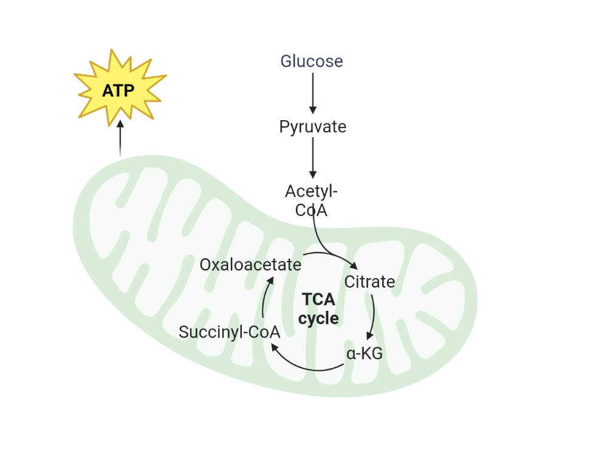
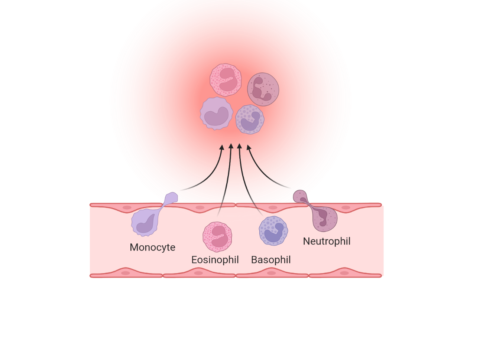
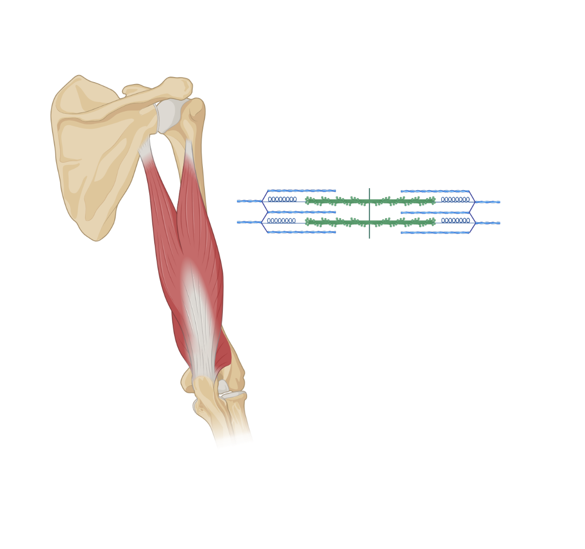

Post-COVID Disease Map
We combine clinical, imaging, proteomic, immune and viral data from a post-infection cohort into one curated, computable map, linking molecular mechanisms to tissues and organ systems.
Explore the six systems How it worksWhat we do
From patient data to mechanistic insight in three steps.
Measure across scales
Clinical data and questionnaires, PET and MRI scans, proteomics, immune profiling and viral reactivation in patients and controls.
Build the map
Findings are curated into a disease map with system, tissue and molecular levels, built on the Minerva platform.
Derive insights
The map supports integrative analysis and hypotheses on how mechanisms connect across organ systems.
Six systems, one disease
Select a system to see what the map covers.

Central nervous system
Brain and neuroinflammation.

Immune system
Immune profiles and viral reactivation.

Gastrointestinal system
Gut-related mechanisms.

Musculoskeletal system
Muscle involvement and post-exertional symptoms.

Vascular system
Circulation, POTS and microclots.

Cellular metabolism
Energy metabolism and fatigue.